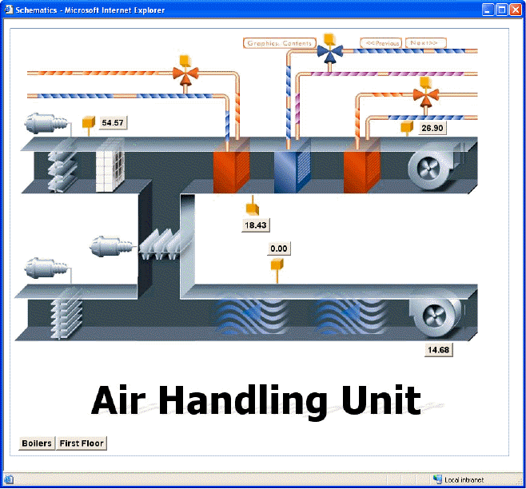

L'écran des Pages graphiques présenté ci-dessous, permet l'affichage des pages graphiques. Lorsque l’accès s’effectue à partir d’un navigateur Internet prenant en charge le mode graphique du 963, l’affichage des pages sera pratiquement le même que sur le serveur. Cet écran vous permet la visualisation des informations ; vous pouvez réaliser différentes tâches en cliquant sur les différents objets en suivant les indications fournies par l’affichage. Le menu contextuel associé à l’ensemble du fond de page vous offre la possibilité d'accéder à l'aide et de naviguer vers la page suivante ou la page précédente. Le poste client ne disposant pas de Navigateur, la navigation se fait à partir de boutons mis directement en place sur les pages.

Lorsque l’accès s’effectue à partir d’un navigateur Internet ne prenant pas en charge le mode graphique du 963, le 963 Server affichera les pages en mode texte et les images graphiques n’apparaîtront pas. La page se présente sous la forme de 3 tableaux où figurent les données en temps réel, les actions et les informations complémentaires. En mode texte, il existe plusieurs présentations possibles des différents types d'appareils. La mise en forme correspondant à l'appareil client concerné est sélectionnée automatiquement. Chaque mise en forme dispose des mêmes fonctionnalités, mais les données affichées varient pour s'adapter aux tailles des écrans et format des images.